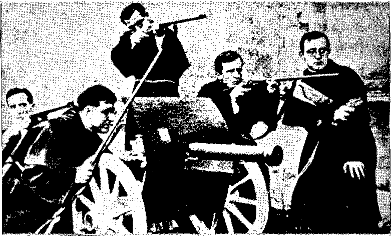
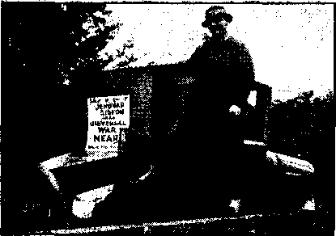
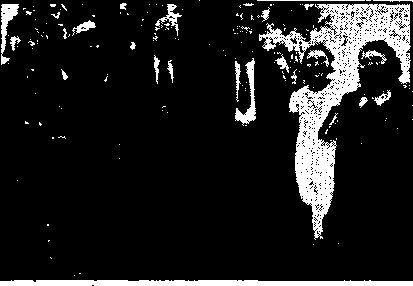
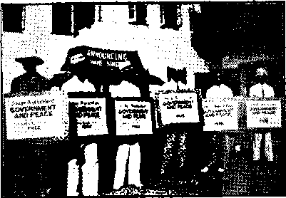
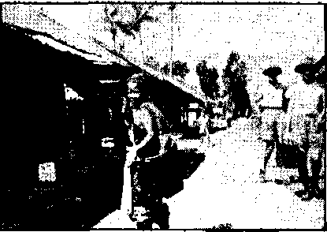

Testimony Against Them (Part 2)
The New Government
Marvelous Witnessing in Britain
Counsel by J. F. Rutherford
Detroit Police and the Witnesses
British Comment
Published every other Wednesday by
WATCHTOWER BIBLE AND TRACT SOCIETY, INC.
117 Adams St., Brooklyn, N. Y.. U. S. A.
Editor Clayton J. Woodworth
Buainess Manager Nathan H. Knorr
Five Cents a Copy
$1 a year in the United Staten
51.25 to Canada and all other countries
NOTICE TO SUBSCRIBERS
Remittances: For your own safety, remit by postal or express money order. When coin or currency Is lost in the ordinary mails, there is no redress. Remittances from countries other than those named below may be made to the Brooklyn office. but only by Internationa! postal money order.
Receipt of a new or renewal subscription will be acknowledged only when requested. Notice of Expiration is sent with the journal one month before subscription expires. Please renew promptly to avoid loss of copies. Send change of address direct to us rather than to the post office. Your request should reach us at least two weeks before the date of issue with which it is to take effect. Send your old as well as the new address. Copies will not be forwarded by the post office to your new address unless extra postage is provided by you.
Published also in Afrikaans, Bohemian, Danish, Dutch, Finnish, French, German, Greek, Hungarian, Japanese, Norwegian, Polish, Portuguese, Spanish. Swedish, Ukrainian; also special Australian edition in English.
OFFICES FOR OTHER COUNTRIES
England 34 Craven Terrace. London. W. 2
Canada 40 Irwin Avenue, Toronto 5, Ontario
Australia 7 Beresford Road, Strathfleld, N S W. South Africa 623 Boston House, Cape Town
Entered as second-class matter at Brooklyn, N. Y., under the Act of March 3, 1879.
Nine Miles Across Gibraltar
♦ Though it is fifteen miles across the Mediterranean from Gibraltar to Ceuta in Spanish Morocco (fortified by Hitler during his “Non-Intervention”in Spain), yet the straits themselves, a little farther west, are only nine miles wide. If it were not for submarines and airplanes one big battleship in the middle of that strait could prevent any other boat or boats from either going in or coming out of the great sea which cradled the Greek and Roman and now the Italian empire. Maybe it was to give Mussolini a chance to tfiink of some of these things that at the end of April. 1940, the British Government ordered all British ships to leave the Mediterranean at once and to return home, not via Gibraltar, but via Suez, i.e., clear around Africa. Mussolini could not help but see that the Suez Canal can be closed to Italian ships instantly, that Ethiopia would he gone before he could think, and that not an Italian vessel could clear for North America, South America, South Africa, Asia, Australia or northern Europe without a fight that would make the Battle of Trafalgar look like a boys’ game of marbles.
Germans Overrunning Italy
♦ German militarists, aviation officials and financial and commercial experts have so overrun Italy (50,000 in one day’s news) that a favorite joke now among the Italian people is for one to say to another, "Well, what do you think of things now?” and to get the response, “It was better under Mussolini.” German secret police have swarmed into the country, ostensibly to help train their Italian colleagues, but actually to send out full reports of internal conditions and make lists of the malcontents for use when the trouble starts. Italy is forced to depend on Germany for her munitions. Thirty percent of the Italian export trade is with Germany.
“And in His name shall the nations hope.”—Matthew 12:21, A. R.V.
Volume XXII Brooklyn, N. Y., Wednesday, January 22. 1941 Number 557
Testimony Against Them (in Three Parts—part 2)
ONE of the regulation uniforms of the
Fifth Columnist is the costume of the Roman Catholic priest. It is not a disguise, but their customary attire. The disguise comes from the foolish sanctity with which a gullible populace esteems such agents of the Vatican. The slogan, ‘‘A priest can do no wrong," is worth more than all the changes of face in Sherlock Holmes’ bag. It is the license to commit crime with impunity. It is used the world over and its effectiveness to deceive the people seems undiminished by repetition. The Converted Catholic, September (1940) issue, recalls its employment in Europe and America:
Parachute troops, vested in cassock and Roman collar, were dropped from the skies into Belgium during the German invasion of last June, according to the New York Times. Not a bad uniform for a Fifth Columnist! It reminds us of a recent, warning of Secretary Ickes: ‘‘America will tolerate no fifth column. It will not avail to misuse the word •Christian’ as part of its name or even to he led by a man in priestly garb. . . .”
A radiocast also announced that, soldiers in the costume of nuns were discovered among the Nazi invaders in the low countries. This is still a good costume. When Rome is backing up Hitler and Mussolini the world over it is impossible for some of these disclosures of methods not to leak out. An even more incriminating bit of evidence against the priesthood was uncovered in the palace of a Franco supporter. This is a photograph (see page 5 of this issue), reproduced in the September issue of The Con-JANUARY 22. 1941 verted Catholic, showing five skirted priests, each aiming a gun and standing beside a field mortar. The mixed expression of fear and bloodthirstiness is so perfectly recorded by the camera that the authenticity appears undeniable. The picture was not taken in the light, but of a practice round, and the trepidation on the faces likely arose from nervous alarm over the sound of the gun. In the first few months of the war, according to Van Faassen, these guns were usually fired on peasants armed with pitchforks.
Of course, Franco was begotten by the pope, nourished by Mussolini and Hitler, and knighted by his sire when the shooting was over. Perhaps some readers have forgotten that Franco was honored with the title “Defender of the Faith” by Pope Pius XI. All this the Hierarchy openly brags about. But Pius is still trying to make Americans believe that Hitler and Mussolini are bad boys that he can’t make behave. He sheds large, well advertised tears about the “cruel strife” among his children. He is constantly praying for "peace”, a piece of everything he can't get all of. When the boys have carved up the earth, it will be time enough to give them the official OK and a ticket to anything they want in the after life that doesn't cost the pope anything. Paying off debts in indulgences is real economy. The quadruplets, Hitler, Mussolini, Franco and Stalin won't be able to call the "Papa" on this double deal, but note how he is called on another crisscross by ll Mondo:
(Continued on page 5)
- L’OSSERVATORE ROMANO
GIOHNALE W0TI0UN0 POU1KO MLIQIKO
Chumv,,^. 19 Novembre 1936.
CITTA DJL VATICAN©
RED AZIONE
lllustrissims Senyors:
Hem rebut les fotografies dels infants victimes dels botnbardeigs aeris, els funestos efectes dels quals nosaltres hern deplorat sempre i els deprequem encara, tanmateix vos estariem particu-larment agraits si, per tai de completar la vostra domentacib, vos dignessiu enviar-nos tambe les fotografies dels cadavees dels Sacerdots, religiosos i re-religioses, consclentment i fredament assassmats pels heroics defensors de la llibertat.
Explanation of Cuts on Pages 4-5
The cuts here shown are evidently a reproduction of a handbill circulated in Spain by the Loyalists to justify their cause. The photograph of the gunners was found, among other incriminating documents, in Madrid, by the Spanish Loyalists in the palace of Count Valle-llano, a financier and a backer of Franco’s rebels. It was probably taken during the preparations for the Fascist putsch.
The cuts from which these reproductions were made were kindly loaned to the writer by Leo H. Lehman, editor of The Converted Catholic, 229 West 48th Street, New York City. In his own comment on these cuts Mr. Lehman says:
The Spanish clergy followed the instructions of Pope Leo XIII to the letter, ‘‘If the laws of the State are manifestly at variance with the. divine law, containing enactments hurtful to the Church, then truly, to resist becomes a positive duty, to obey, a crime.”
The translation of the printed matter above the cut on page 5 follows:
The sending of photographs to thO'Osserra-tore Romano of children killed in Madrid by explosives of Italians and Germans dropped by German and Italian airplanes, when they deliberately bombarded schools and parks, brought the following letter to the Commissariat of Propaganda of the army headquarters of Catalonia and says:
“L Osservatore Romano, Daily PoliticoReligious Newspaper, Vatican City. November 19, 1936. Vatican City, Editorial Department. Distinguished Sirs: We have received the photographs of the child victims of the aerial bombardments, whose sad results we have always deplored. We would be particularly grateful to you, if, in order to complete this documentation, you would
L’envoi a l’*O»ervatore Romano* de photographies d'enfants tu6s a Madrid par des expla-sifs italiens et allemands lances par des avion* allemands et italiens, tors des bombardements d6liberes d'ecoles et de pares, a valu au Commissariat de Propagande de la Gindraliti de Cotalogne, de la part du journal du Vatican, la lettre reproduite ci-dessus, et qui dit:
• Nous avoni refu les photographies d'enfanfs vicfimsi des bombardernentl aerivns, dant nous avani foujouri diplord les funeifei effets; nous vous serians parf icu/ierement obhal* ir, nfin de compMfer caffe documentafttofT, votf* vouh'fet bien noui envoyer ousst fes photographs* de* cadavre* de* prifre*, religieujs reli* gieuse* iciemment et froidemenl a**a*sine* par fet h^roique* defenieuri de fo /ibert^V
lettre a laquetle Ie Commissariat de Propagande a r6pondu en envoyant d I'sOsservotore Romano* la photo ci-dessous, qui montre les activites guerrieres des apotres du catholicisme.
Cette photographic, priie probablcmcnt pendant la preparation du putsch faiciite, a 616 trouv66, entre aulreida-cumenrt aocuioteuri, tors dune perquisition, a Madrid, au palais du comic Vallellano, financier, conjurS del re bell es
kindly send ns also photographs of the corpses of the priests, of religious men and religious women murdered deliberately and coldbloodedly by the heroic defenders of liberty, [signature] SAcrri’iEK Boehm.”
To which letter the Commissariat of Propaganda responded by sending to the Os Her valors liomano the photo as above, which shows the belligerent activity of the apostles of Catholicism. This photograph, probably taken during the preparation of the Fascist putsch, was found among other incriminating, documents, when searching the Madrid palace of the count Vallellano, financier, fellow-conspirator of the rebels, •
(Contini.ied from page 3)
Pius XTTTs Double Game. It is now possible to foresee the reward that Pius XII will get from Mussolini for deceiving the English and French and making them believe that they could count on Italian neutrality. Italy will acquire Palestine, but its administration will be entrusted to the pope.
“While he proceeds hand in glove with Mussolini in Europe, Pius XII manages to create the impression in America that he does nothing from morning to night except, pray for peace, and demand the respect of the rights of smaller nations and minorities, and co-operation on an equal footing of all peoples. Tic is repeating during the present war the same
double game as that which his predecessor Pius XI and he himself as his secretary of state played at the time of the Ethiopian War. In America he dons the garb of a humanitarian pacifist who is stifled in Italy by a bad tyrant, Mussolini, while in Europe he works in the closest co-operation with Mussolini.” Several examples of the Pope’s blessings of the totalitarians arc then given. In summary the Vatican’s attitude is explained:
"The truth is that the Pope, like an ancient Sybil, spoke in enigmas. But one point was clear in his nebulous words: the incitement to' Italians to remember that their land had been ‘fertilized by the blood of their forefathers’ and that their duty was to pray for that land while it was at war, that is, pray for Mussolini’s victory. The Holy Father has never directed Urgings of this kind either to the English or to the French.”
The same Stanley High who lashed Jehovah’s witnesses in his Saturday Evening Post article derisively entitled “Armageddon, Inc./’ quoted from this identical issue of II Mondo in a previous article which purported to expose alien poison. Dr. High called this journal an “ably edited anti-Fascist Italian weekly”. But he nowhere mentions the Vatican as the superpoison which emanates from alien Rome. No doubt the reason is stated, on page 4 of this issue of II Mondo (July, 1940), in regard to Fascism sponsored by Italian Catholic churches:
With the respective parish priests co-operating, it is a sure bet that nobody would dare to interfere, for it is well known that whoever in America tries to question the activities of a parish priest or of a Catholic church is slated for a big dose of disappointment, to say the least! . . . And so Mussolini propaganda marches on!
High envisions no link between the Papacy and Fascism. The “Good Neighbor” party of which he was once the head evidently includes Hitler, Mussolini and the pope, but excludes Jehovah’s witnesses, who have constantly pointed out the collusion between the master and his bloody sons. Doctor High should add an “1” to his name.
Another Vatican pronouncement discloses Papal backing for son Hitler. All have read how the Catholic bishops of Germany, assembled at Fulda, declared their allegiance to Hitler, and asserted that “the Catholic Church of Germany is indebted to German troops for the victorious advance and defense of the German homeland.'Without the successful warding off of enemy invasion by German armed forces, German Catholics could not have pursued so undisturbed and quietly their church work and ministerial offices.” (Associated Press dispatch August 28, carried by New York Times, Hudson Dispatch and many other papers) After this document had been published all over the earth, according to the New York Times, September 17, “the Vatican was understood today to have forbidden publication.” This furnishes a rather good example of Vatican diplomacy. Another clue to where, .the pope’s heart interest lies has been provided by the editor of The Converted Catholic, who is an ex-priest and profound student of the Papacy. He stated' that when the bishops met at Fulda they received in highest esteem a dignitary of the pope known as a Legatus a Latere1 which in common parlance means 'side kick’; that this emissary, who in truth is the pope’s presence, and fully authorized to act for the pope, was likely the dictator of the letter of allegiance to Hitler; and even if not, it was written at the pope’s orders and naturally with his approval.
This painting on the side of a trolley car (probably in Barcelona) shows the disgust of the Spanish people with the cruelty and hypocrisy of their priests. The translation of the Spanish is: “And with the cross they wanted to dominate the people,” Since then, they financed Franco, Hitler and Mussolini.
Many issues of the above magazine have been quoted to demonstrate the fact that Hitler’s aims and those of the Vatican are the same. They are both moving to the same end, world domination with the pope as spiritual head and Nazi-Fascism as the political head. This is explicitly repeated in the September issue:
What Hitler aims to do is put the clock of Europe back three hundred years, to force the Protestant and liberal nations of Europe to their knees at Westphalia and tear up its famous guarantees of humanity and tolerance which they entered into with the Catholic princes of that time—in spite of, and against the most totally condemnatory of all decrees of a Pope of Rome. If he succeeds he will be carrying out to the letter every word of the decree of Pope Innocent X, who ordered that none of the sworn guarantees of peace and tolerance of the first Peace of Westphalia were to be adhered to, that all of these guarantees must, for all time, be considered as ‘null, void, invalid, iniquitous, unjust, damnable, reprobate, inane, and altogether lacking in force.’
If facts mean anything, and since external protestations of loyalty on the part of suspected Fifth Columnists do not fit in with facts, then no well-meaning American can afford to dissociate the political aims of the Roman Catholic Church from the machinations of Adolph Hitler and Benito Mussolini.
Catholic leaders throughout America are shouting this fact, but only a few take any heed. The New York Times and the New York J ournal-American of September 12 contain dispatches from Rome praising Coughlin’s ’‘firm stand against Jewish democratic propaganda in the
United States” and quotes Coughlin's statement in Social Justice that “Mussolini is the world’s best statesman. He made peace with the pope, saved European civilization in Spain, and it must be concluded that Italy is the hope of Christian civilized Europe.” S._ R. Herbert, writing in the Protestant Digest, August-September, shows that Coughlin was merely one of many agents of Fascism, that is to say, of the Hierarchy:
In the first article of this series (March, 1940) we showed that Father Coughlin’s anti-Semitic broadcasts began as an integral part of an international campaign of the Roman Catholic Church to bring victory to the Catholic-Fascist forces in Spain. ThisL propaganda work in the United States paralleled the actual military work of Hitler and Mussolini in Spain. We showed that Coughlin’s speeches constituted in reality a blackmail ‘‘line”, a threat to the Jews that they would be persecuted if they did not support the Franco forces in Spain. We showed also that the essential core of the Coughlin “line” of those months was repeated by the various members of the pro-Fascist front, or the Franco front, in America, ineluding archbishop and bishops, Congressman Dies, Msgr. Sheen, Father Thorning and others. Thus Coughlin’s “line” was merely an extreme position on the general Catholic “line” of those months. While this “line” was also pro-Nazi, primarily it was the line of the Vatican. . . . Father Coughlin and the Franco Front ... is basically not Nazi, but Catholic . . . anti-Semitic ism in Franco Spain . . . formed part of a Catholic frontal attack on liberalism, democracy, Protestantism, parliamentary government.
In the same issue of the Protestant Digest, Lawrence Fernsworth, himself a Catholic, and correspondent for the New York Times during the Spanish rebellion, quotes a mass of Catholic authorities, proving their universal hate for liberalism, democracy, and Protestantism. The first in a series of articles bn “The Catholic Church and America” is entitled “The Heresy of Freedom”. The whole article is recommended as a plain revelation of the avowed hatred of Rome and her prelates for the United States of America. At page 14 the author writes:
Let something of the record of the attacks upon the American principles of liberty briefly be stated, so that it may be seen how this unholy spectre of religious intolerance has been raised in our midst by the men of the [Catholic] Church and how no alternative but to meet it remains. One finds these denunciations of liberty coming from the lips and the pens of bishops and priests in almost any Catholic newspaper one chooses to pick up; they abound in the Catholic journals that lie on the racks and in the vestibules of Catholic churches throughout the land.
Fernsworth cites many examples such as the following:
Turning to the Jesuit press one finds that the American system is “pseudo-democracy . . . Protestant, rationalist and definitely anti-Christian in its inspiration”; and further: “This business of teaching every child indiscriminately how to read and write results in nothing more than mass illiteracy. The indiscriminate ^education’ applied to all alike under a state system is the result of the heresy of the equality of man.” [The Jesuit journal Amenca, April 13, 1940, and' October 31, 1931]
Ever since the days of the Vatican council the Jesuits have set the tone in the attacks upon liberalism. One found it in that day, and one still finds it, in the Jesuit organ published at Rome known as the Civiltd Cattolica, or Catholic Civilization. Its editors have the personal approval of the Pope and at times are appointed by him. As its name implies, its * mission is to propagate the interest of Catholic civilization as a substitute for all other forms of civilization, particularly the liberal forms. In that day one found it attacking the “criminal principles of liberty of worship, of the press and of meeting”, and such has been the Jesuit thesis and theme from that day to this.
We have quoted entirely at random, as we picked up this journal and that. A compendium of even the very recent attacks upon liberalism in America would fill volumes. When one has sifted out their applications and
CONSOLATION
This huge store of money, seventy-two million pesetas, was discovered in the hospital of the Little Sisters of the Poor, in Barcelona. Twenty-five years ago the present pope, then a young priest in Rome, stated to a Catholic mm (who is now rejoicing in the truth) that even then the Papacy had so much money it did not know what to do with it. Since then, it financed Franco, Hitler and Mussolini,
meanings one finds that nothing, absolutely nothing, is left of those principles of liberty and freedom upon which Americans place a very high value. One sadly reaches the conclusion that officially the [Catholic] Church does not believe that governments derive their just powers from the consent of the governed or that men, being born free and equal, have the right to liberty and the pursuit of happiness, The individual has no right to decide wherein his happiness consists. That is done for him by an ecclesiastical authoritarianism and his liberty consists in the freedom to remain within bounds. The principle of equality of man is a “heresy”. It becomes all too evident as the Jesuit speaker in Boston set forth, that,
"Of course liberalism and Catholicism cannot live under the same roof/'
This from the. organization that proJANUARY 22, 1941
fesses to teach patriotism by forced flag saluting! Here is a plain fulfillment of the prophecy, “Out of thine own mouth will I judge thee, thou wicked servant.” (Luke 19: 22) Their heritage is destruction, and even their memory shall rot. —Proverbs 10:7.—Elton Groves.
The Sugar Maple
♦ Of the seventy varieties of maple trees found in the world, the famous hard or sugar maple, whose beautiful leaf is Canada’s national emblem, is the only one that yields sugar in commercial quantities. The sugar maple is plentiful in New York state and is found to some extent in Pennsylvania also.
Balbo Probably Bumped Off
♦ Mussolini, like Hitler, would not hesitate to murder his best friend, being utterly without principle. It is well known that he was jealous of his confrere Balbo, inventor of the castor-oil treatment of anti-Fascists, and therefore himself a brute like his master. Well, as the German general von Fritsch Vas bumped off early in the Polish campaign, so that all the ‘glory1 might come to Hitler, so Balbo has been finished off. The first reports from Rome were that.he had been slain in an air engagement over Tobruk, Libya, and then the British announced that no such air engagement had been fought. None of their planes had been there. It is simple enough. A dictator can finish off any person of whom he is jealous, and Balbo probably got his just as Mussolini’s dreams of empire rose to their highest level.
The reason why Marshal Balbo was bumped off by Italy’s Head Murderer was that he honestly believed Germany could not win over Britain, and that Italy’s chance of becoming a great power was as a friend of Britain rather than of Germany. News of his death came through Berlin, and suggests that Hitler had ordered the job done, The statement that he was killed in an airplane action is known to be false, as there were no such conflicts in northern Africa on the day of his death. Mussolini never forgave him for the glory he obtained by his mass flight to Chicago in 1933.
Water for the Heel of Italy
♦ Apulia, the heel of Italy, home of 2,500,000 inhabitants, and producer of much of Italy’s wine and olive oil, will henceforth have a steady flow of water of the average of 158 quarts per day for each person in the area. This land, of limestone formation, and hence exceedingly rich and exceedingly dry, will now be served by a network of pipe lines comprising nearly a thousand miles. The water will come from the western slopes of the Apennines and will serve more than 300 communities.
The country homes of Apulia are unique in that they are ingeniously built in the form of beehives. The walls, sometimes seven feet thick, so as to keep out the cold in winter and the heat in summer, are made of limestone, without cement. This is ingeniously done by making each stone wedge-shaped. These laid circlewise in an ascending and diminishing spiral, the entire structure looks like a beehive. As the family grows a new hive is made adjacent to the original.
Newlyweds on Italian Railroads
♦ Despite occasional family rows, the Italian government and the Vatican get along well together. An instance of their co-operation is t,hat throughout Italy, on all the railroads, a newly married couple may travel for an 80-percent reduction on route to the Vatican, to receive there the pope’s “blessing”, Wednesday is the day, and on that day, in the course of eight years, Pius XI personally met an army of 300,000 newlyweds. Nearly 700,-000 other newlyweds called at the Vatican during those eight years, but were not personally received. Pius XII receives at the rate of 2,000 couples a month.
One Roll at a Time
♦ The Fascist Federation of Merchants issued orders that hereafter each patron is to receive one roll weighing about If ounces and a small quantity of bread sticks. After eating his roll the patron may order as many more as he can eat, but they will be delivered ope at a time. The object is to avoid waste, but in the meantime Mussolini and the bishops back of him are completely indifferent to the huge wastage of human life for wfliich they are responsible on Italy’s battle fronts.
Aliens in Georgia
♦ There are not many aliens in Georgia. None the less, Governor Rivers views them with alarm. By a State statute most business and professional men and workingmen of certain sorts must get a license from the state commissioner of revenue to carry on their business, practice their profession or do their work. Governor Rivers instructed the commissioner to revoke the licenses of all aliens, “several hundred” in ail. He seems, to take pride in a proceeding which, so far as he knows, is the first of the kind ever undertaken by a State.
One hopes that it will be the last. A resident alien is not only under the protection of treaties by which the United States grants him certain privileges and rights. He is “a person” 'within the scope of the Fourteenth Amendment and most other Constitutional protections, in so far as the Government’s right of exclusion or expulsion is not in question. His civil rights are substantially those of a citizen. His disabilities are only in the matter of political privileges. Even when the United States exercises the power of expulsion for cause, it is barred, in time of peace, from any arbitrary conduct in his regard. He must have due notice and occasion to answer.
If he is a'domiciled alien, as is the ease in Georgia, he must have a reasonable time to dispose of his property and settle his business. Apparently Governor Rivers assumes, without evidence or even investigation, that all aliens in Georgia are dangerous or suspicious persons, engaged in espionage or other unlawful activities. Not on any ground can this wholesale execution of the law be justified legally or morally .-New York Times.
The Shame of Elba
♦ Elba, Alabama, is shamed by the publication of the hideous facts connected with the flogging of two women by five JANUARY 22, 1941 masked men. One of the women was seventeen years of age. The five “brave” men lashed her until there was not on her body a place the size of a dime that was left unbruised. If they had any information on which the floggings were based, would it not seem that one of them might have had manhood enough to go to the lawful authorities and make the facts known? As matters now stand, the five men have been arrested, and the law may have something to say about the floggings after all. The t'wo women that were flogged left the community. They did not dare to remain. Quite possibly the seventeen-year-old girl had been a bad girl. Quite impossibly no man was involved. What about the man ? Don’t ask. He'may have been one of the floggers.
Ku KIux Patriotism
♦ After learning that the Ku Klux Klan sold out its Imperial Palace in Atlanta to the Roman Catholic Hierarchy for use as a monastery, and that the chief wizard at that time had had a love-feast with the bishop of Savannah, it comes as no great shock to find that the then wizard, Dr. Hiram W. Evans, has since been charged by the United States Government with mail fraud and conspiracy by which, in a single year the Government was caused to pay $90,000 more for asphalt than it would have cost at open competitive bidding during that period. Experience show’s that the loudest-yelling patriots are generally the biggest crooks.
The Best-dressed Man
♦ It just so happens that the best-dressed man in the Kiwanis club, at New Orleans, La., is a man that has now been sightless for 19 years. Carlo F. Cangelosi has >been selling more than $200,000 worth of insurance a year for the past fourteen years. A secretary goes along to fill'in the necessary papers.
Witnessing in Wartime
♦ You will see by our address (in the east of England) that we are right on the sea front. It is sad to see the beautiful seaside resorts bereft of visitors and all barricaded with barbed wire. As you know, in the event of an invasion this area would be a first line of defense. Consequently, evacuation of residents may' take place at any time. War conditions make it very difficult to get about, and I have to be very careful riding my cycle, as I am over 70 years of age. The roads are v6ry busy with military traffic. How-: ever, we hope to finish the district before the inhabitants are sent away, for we are having the most wonderful time in the placement of literature that we have ever experienced.
The other day I had rather an agreeable experience just as we were finishing the last small houses in S--. In the
morning I had the misfortune to lose my testimony card, so I had to make the best of it, and go without for the rest of the day. I went to a house and introduced the book Salvation, Before I could explain, the person I was addressing called to another woman across the way, "Come and see this book; it’s about the war.” As a matter of fact, I had not mentioned the war.
The other woman came across, took the book from me, and began asking me questions in a very rude manner. At first I answered several of the questions, but when she demanded my name, wdiere did I come from, who paid me, etc., I asked her for her authority for such a croSs-examinafion. She replied she would give me in charge if I did not answer her, and took hold of my arm and tried to pull me along with her. However, I broke from her and she marched off with the book. Ethel and I followed her to see what she would do. She took the book into a place filled with military people.
However, she soon came out again, looking anywhere but at us. An official then followed with the book, which he said he had looked through. He asked very kindly to see our identity cards (every person in Britain must carry one of these) and Ethel showed him also her testimony card. He then said, “This is a good book; carry on with your work.” Accordingly, we finished the entire place and had a good time. And so another effort on the part of Satan to hinder the work was frustrated. Soon he will completely lick the dust. (Isaiah 65:25)— Esther R——, England.
Report from Paisley, Scotland
♦ Owing to the development of the company we secured a new hall about three months ago, and after spending nearly forty pounds on improvements we received notification from the Military that the premises would be required for the purpose of a Military canteen and gave us instructions to enable them to view the premises on a certain date.
Realizing that we had no option but to submit, we decided to be as nice as possible, in the hope that some compensation would be given to us; with the result that, after the provost (mayor) and the chief of police (who were among those to inspect the premises) had agreed that the hall was suitable for their purpose, they turned to us, remarking that we were very kind to them in this matter, and asked what we intended to do in the future. After pointing out that our only course was to endeavor to secure further accommodation, the provost expressed the desire that we inform him of the expense already incurred and of any other accommodation which we might be able to secure, and he promised to see what he could do for us. We found that there were two adjoining shops to
Theoeraey publishers at Manila, Philippine Islands
let which could be altered to suit our requirements, and informed the provost accordingly, also submitting a complete list of the expenses incurred. He wrote us in reply and arranged an interview, when he informed us that his committee very much appreciated the work which we, as Jehovah’s witnesses, were doing in the town, and that having caused us to vacate the hall they could not see us stranded, and therefore they would give us a cheque for £40, agreeing to let us have the use of the two shops for half of their previous rental.
This has served as a great encouragement to the Paisley company, for they are now in possession of a hall well suited for their needs, as ■well as being in a prominent business thoroughfare, at a rental of half of what they had been paying previously.
When handing me the cheque, the provost assured me that if ever he could
JANUARY 22, 1841 , do anything for us in the future, he would be pleased to do so, and expressed once again his great appreciation of the way in which we had acted toward them.
Marvelous Witnessing in Britain
♦ Catholic Action in Britain, taking advantage of the sudden bad turn in the war during May and June, turned on Jehovah’s witnesses, stirring up the people in bitter hatred against Jehovah’s people, resulting in many assaults and incidents of reproach. They form riots calling the Lord’s "locusts" pro-Nazi, fifth columnists, Fascists and Communists, or any name they can think of to get the people to turn on the Lord’s servants. In spite, of this growing reproach and wicked reviling the publishers are carrying forward calmly and persistently in their service of bringing comfort to those of good-will and there are many of them who are now demonstrating
their good-will. Such “sheep", when they hear the message, break out in tears, actually pulling the brethren indoors for an hour’s draught of the waters of life which they hear from the phonographs and the verbal testimony of the Lord’s servants.
Witnessing in England during these critical days is an experience that was not possible a few months back. The field seems to have been divided between the “sheep" and “goats” very decidedly. The work now is more dangerous in that one is subject to abuse and nasty slander from the goats, but, on the other hand, the sheep that are found realize that during these past few years Jehovah’s people have been telling the truth. These sheep remember the Face the Facts booklet and the strong warning given by Judge Rutherford that the Catholic-Eascists were out to get world domination. Such has now about come to pass, vindicating the bold and uncompromising stand Jehovah's witnesses took against these enemies of the people. The sheep now eagerly, as if almost too late, are reaching out for the message of truth and want to have a share in declaring it to others before it is too late.
Campaigning Inland
♦ Recently three of us carried out an extensive three-month campaign in in-
Antitypical locust leaping over a wall in the ehaiihei island of Jersey
Theocracy pioneers, Rio Grande do Sul, Brasil
land Sumatra, during which period we traveled some six thousand miles and were most successful in spreading the message. At present I have to sail by sampan to and from my territory, the big oilfields at Pladjoe. It is marvelous to realize just how the Kingdom news is spreading in Sumatra. When I first arrived in Pladjoe and started witnessing, numbers of people produced Watch Tower literature, both books and booklets. On asking where they came from— being the first publisher ever to set foot in the district—1 was informed that some had them sent by friends, or had obtained them while on holiday in more civilized parts of Sumatra.
It has often been found here that Dutch people recently out from Holland, although paying little attention to the books when offered them, have seen fit to bring some all the way out from home and then lend them to others with whom they come in contact. Although it may be , said that these people have a share in spreading the message, not many appear desirous of becoming really active in the Kingdom work. However, here in South Sumatra a Bible study has been started with a native schoolmaster, and other interested Batak people are commencing to attend.
The climate is very sultry in this part of Sumatra, up to one hundred degrees, summer and winter. Strangely enough,
Theocracy publishers in West Africa hardly an evening passes without rain. Because of the heat and humidity it is* not possible to work between one and five p.m., all shops and offices being closed and the people asleep.
For a servant to wake any members of a European household during those hours is an unforgivable sin and more than his job is worth. 1 sometimes wonder who will be blamed for disturbing their rest at Armageddon.—Australian Consolation.
“Great Plainness of Speech”
♦ A British writer. Walter Wingfield, got too fresh in Britain, repeating the lies told in Catholic papers, and received the following interesting note from one of Jehovah’s witnesses, F. It. Freer, that borders on the field of what the apostle refers to as “great plainness of speech”:
It is true that Judas Iscariot obtained money for bet raying Jesus Christ, but what good did it do him? Judas said, “1 have sinned, in that J have betrayed the innocent blood,” and he cast down the pieces of silver in the temple, and departed, and went and hanged himself.
Be sure that the ill-gotten money you have received 1900 years later for seeking to betray Christ's followers with your pen, and tor disparaging the testimony of Jesus, will be of no greater benefit to you.
Your impudence is colossal. After gaining money hl this despicable way, you have the cool cheek to inquire where Judge Rutherford and Jehovah’s witnesses obtain their money. In contradistinction to yourself, they obtain it honestly, and not for telling lies.
I wonder if your mind is too obtuse, or your conscience too seared, to render you incapable of taking (iarmdicl’s advice. 1 le said : “Refrain from these men, and let them alone: for if this counsel or this work be of men it will come to nought: but if it be of (tod, ye cannot overthrow it; lest haply ye be found even to fight against God.”
If that does not give you pause, remember that Haman was hanged on the gallows he had prepared for Mordecai, the man of God. Think it over.
Refugees Before the Storm
♦ A Kingdom publisher in Scotland writes that in his community the refugees are beginning to come in, before the great storm. Among them is a man of 81 who sees marked improvement in his health since he accepted the truth. Another is a German woman whose parents had the truth in her native land. When she saw the horrible persecutions of the witnesses in the Land of Horrors she fled just in time. A Scottish lass states that until she read Enemies she could never understand the Bible, but now it is becoming increasingly plain and she is going on from knowledge to knowledge.
Theocracy publishers, witnessing in a jungle town near the border of Siam, ask to note the bangles on the lady’s legs
Deliverances from Death
♦ On Friday the 12th July at 1 p.m. an enemy bomber suddenly brought death and destruction to a peaceful town in the northeast of Scotland. The plane approached at a great height and dropped twelve bombs on various parts of the town, resulting in 29 persons being killed, 71 injured, and much damage being done. '
In this town, as in almost every other town in Scotland, reside several of Jehovah’s witnesses. These! true Christians have no fear of what the Devil’s terrible war machine may do to them, because they have implicit faith in the promise of Jehovah G-od to protect those who put their trust in Him.
One elderly woman, who has been a faithful witness for many years, had a remarkable escape. A bomb fell on her neighbor’s house, almost entirely demolishing it, while her own flat escaped with only the bedroom windows being smashed, despite the fact that tin; lower flat of the same house, which is occupied by another family, suffered considerable damage. Another witness, residing in the same town, also old and in bad health, was wonderfully preserved by the fact that a bomb which fell in a garden opposite her home failed to explode.
Don’t Be Shy
♦ 1 was witnessing in notoriously tough territory one week-end. 1 called at the first house in the block, and a very pleasant woman said, “Ah! you are one of Jehovah’s witnesses. Don’t be shy. Open up your bag and let me see what you have.” She and her husband wanted to learn something of Nazism and Fascism, and the ultimate fall of the nations. I drew her attention to the necessary publications and she called inside to her husband, who came to the door and shook hands with me and said he was very glad to meet someone representing Judge Rutherford. The man took the Australian edition of Consolation and his “better-half” availed herself of the Government and Peace booklet. Both wanted to know where they could glean more information about the-work. 1 have often made the statement that before long the “great multitude” will rush out and drag us in and kiss us! Tt certainly seems like that now: these people are prepared by the Lord to receive us.—Australian Consolation. ■
At Ballymena, Ireland
♦ The two pioneers (sisters) engaged the Town Hall for the lecture, “Government and Peace.” An eight-foot poster outside the hall carried a notice of the lecture for the week. Although soundcars are prohibited in the town, yet I asked the chief of police for permission to advertise the lecture by means of microphone announcements, and this was granted.
The town has a population of 11,000 and is steeped in religion. However, it was grand to see 90 people present at the lecture. Of these, 80 were strangers. A remarkable point was that 70 of the strangers were men. One man cycled ten miles to the lecture. Two people of goodwill joined us in the service for the first time on the Sunday morning. Their eagerness was seen in the f^ct that they were seen to be running from door to door. Regular meetings will now he held weekly.-—Zone servant, Zone 27.
Invasion Rules
♦ Some of the rules made by Britain for use in case of invasion by Hitler are of use for the invasion of the whole world by the Roman Catholic Hierarchy, of which his activities are such a prominent part. They are (and Jehovah’s witnesses can do well to remember them), Stay put; do not believe1 rumors or spread them; keep watch; report treachery to your nearest zone official; do not give any agent of the Hierarchy anything he can use; hide your maps; think before you act, and think of the Lord and His work before you think of yourself.
(To be continued)
WHAT organization of this world do you know that brings genuine good news that satisfies? The religious organizations claim they are “saving souls'’. Their claim is utterly false, because, as it is written, “salvation belongeth unto Jehovah.” (Psalm 3:8, Am. Rev. Ver.) No religious institution can provide salvation for mankind, and the claiin to that effect is a fraud and snare. The lifeblood of the Son of God, Christ Jesus, which was poured out in death, provides the price for the purchase of all who will believe on and serve the Lord God, and such is the means that God has provided for their salvation, and there is no other way of salvation. (See Acts 4:11,12.) Now, in this day of world crisis, is the time when Jehovah God declares His purpose to destroy all opposition to His kingdom under Christ, and He sends forth faithful men and women as His witnesses to inform the people of this fact and of His means for their salvation before the destruction takes place at the battle of Armageddon, now near.
Such work was foretold, at Matthew 24:14: “And this gospel of the kingdom shall be preached in all the world for a witness unto all nations; and then shall the end come.” Hence the mission and work of the witnesses of Jehovah is that of preaching this “gospel” of the Kingdom in obedience to this command of the Lord. Gospel means good news, and “this gospel of the kingdom” is, to wit, that the kingdom of Jehovah God under Christ has come and that, as soon as the Lord God eliminates the enemy Satan and his oppressive organization, God’s kingdom will bring forth lasting blessings to all who desire peace, prosperity, JANUARY 22, 1941 life and happiness. This is not only good news, but the best news that was ever brought to mankind. AH honest and sincere persons are anxious to hear it.
Every person who becomes a true follower of Christ Jesus is commissioned or “ordained” and commanded to preach this gospel of the Kingdom for the aid and comfort of the people. Note Isaiah 61, verses 1 and 2. Every one who is a true follower of Christ Jesus must proclaim the truth as contained in God’s written Word, and this gospel of the Kingdom is the truth. Jesus said so, at John 18:36, 37. The Roman Catholic Hierarchy and its press charge that Jehovah’s witnesses carry on a campaign of' hate. There is not the slightest justification for such a charge. They are not engaged in a hate of any individuals, but are engaged solely in proclaiming the truth. The truth is not proclaimed for the purpose of holding up others to ridicule, but for the purpose of bringing comfort to oppressed humankind. For many long centuries the human race has been under the dominating influence of Satan and his visible agents, and now the time has come for the people to learn how they may escape that oppression and find the salvation and blessings which Jehovah God has provided for them. About these truths Jehovah’s witnesses must tell the people. The truth when told necessarily exposes Satan and wickedness. The truth is sharp and cutting, and concerning the effect of God’s Word of truth it is written : “For the word of God is quick and powerful, and sharper than any two-edged sword, piercing even to the dividing asunder of soul and spirit, and of the joints and marrow, and is a discerner bf the thoughts and intents of the heart. Neither is there any creature that is not manifest in his sight; but all things are naked and opened unto the eyes of him with whom we have to do.” —Hebrews 4:12,13.
It is no wonder, then, that when the truth of God’s Word is told it shocks the religious susceptibilities of men who use
religion as a racket and reap great pecuniary profit therefrom. Tt is not at all surprising that the Roman Catholic; Hierarchy howl when the Bible is brought to the people and explained to them. For instance, one of the pet doctrines of the Catholic Hierarchy is that of “purgatory", whereas the Scriptures plainly show that no one dying goes to “purgatory”; that there is no person in “purgatory” suffering punishment, and that certainly no human creature can do the dead good by uttering prayers, because the dead are dead and will live again only through a resurrection. The “purgatory” doctrine has for a long while been the means of extracting large suras of money from poor and rich who rely upon the word of Catholic priests and have no knowledge of the Word of God; and when the truth is told to the people the clergy howl, and, as Jeremiah 25: 33-36 says, their how-ling is due to the fact that their lucrative religious pastures are being spoiled and their revenue taken away.
The clergy tell the people that they are the representatives of God and Christ and that they can pray for those in “purgatory” and relieve their “suffering”, particularly when money is contributed by the living for the purpose of having such prayers uttered. There is no reason why the clergy should thus deceive the people. The facts clearly show that they are by such means obtaining money under false pretenses, because the clergy do not represent God and Christ in any kind of racket. God and Christ cannot be parties to fleecing the people.. The Devil 'well knows that the clergy, practicing religion, turn the people away from an intelligent worship of God and hence the people, when learning the truth, see they have been deceived by religionists and 'they flee to God. That makes the Devil and his religious agents very angry. The Devil tries to keep the religious practices alive and a going concern.
Preaching “this gospel of the Kingdom” is not limited to words being spoken by individual creatures. The more effective wav is to encourage the people to read the plain truth as it is written, and the explanation of which is published in books and in magazine form. Hence Jehovah’s witnesses employ the printed message by publishing and placing in the hands of millions of persons books and magazines, and at the present time these are going into the hands of the people in more than eighty languages. The witnesses go about from place to place, as Jesus and the apostles did (Luke 8: 1), and exhibit such publications to the people and encourage them to study the same in connection with the Bible. Also the spoken message is recorded on phonograph discs, and transcription machines and phonographs carried about are used to reproduce these spoken lectures. During the past year many thousands of such sound-equipment machines have been employed to preach “this gospel of the Kingdom” within the hearing of the people. These lectures reproduced daily by many thousands of played records are bringing the good hews of the Kingdom to the attention of millions of sincere persons. The result during the past year is that many millions of honest and sincere Catholics and non-Catholies have heard this gospel message of truth and, learning such, many have immediately fled from the religious institutions doomed to destruction and have found refuge and protection and peace under Christ and God's Theocratic Government, and they henceforth delight to tell others ahpui these great truths. The more this good news is spoken, the greater is the anger of the Devil and his religious traffickers and the more .strenuous and malicious are the efforts put forth by these religionists to persecute the bearers of this good news. By means of persecution the Hierarchy hopes to stop the work of Jehovah’s witnesses. These opponents, however, overlook the fact that this is Jehovah God’s “strange work” and no power can successfully resist the same.—Isaiah 43:13; Acts 5: 38, 39.
“Cross” or “Tree”?
♦ The term “cross", carrying its modernday significance, is not found in the original Scriptures. Where it appears in our English Bibles it is a translation of the Greek term “stauros”, which means a stake, whereas “crucify” translates “stauroo”—to impale, that is, to hang upon a pole or stake.
In the Latin translations of the original Greek manuscripts the word “crux” is used to translate “stauros”. But even this word does not mean a “cross” in the present-day sense of that term. “Crux” referred to suffering or torture, often inflicted by impaling, and both “crux” and “stauros” refer to a stake, pale or pointed post, driven into the ground. The word “stauros” has no implication of a cross-bar or cross-piece affixed to the post. Jesus was undoubtedly hung upon a straight stake or “tree”, probably roughly hewn. See illustrations appearing in the books Deliverance (page 169), Enemies (page 125), and What Is Truth? (page 56), Watchtower Bible and Tract Society, publishers.
The fact that the Roman Catholic Hierarchy has made so much of the sign of the cross, and the further fact that the sign of the cross was prominent in heathen religious ceremonies and practices, tends to confirm the fact that this was brought into the practice of the “Christian religion”, so called, at an early date. The early Christians never employed the sign. They did sometimes use the combination of the lettets X, P and I, the first three letters of the Greek word ■XpiiiTov” or Christ, the “P” corresponding to our “R”. As “Christian religion” became more a matter of form, the use of this sign upon tombs and memorials became more frequent. The Cross did not become the symbol of the) “Christian religion” until four centuries after the death of Christ. When Constantine saw the cross in the sky and imagined the words, “By this sign conquer,” the cross was the sign, not of the. “Christian religion”, but of sun-worship. He did not become even a hominal Christian until twenty-five years thereafter, and from about that time the cross, formerly a symbol of sun-worship, began to be used as a symbol of the “Christian religion”, as it was called.
Deuteronomy 21: 23, Acts 5:30; 10:39; 13: 29, Galatians 3:13, and 1 Peter 2: 24 show that Christ was hung on a “tree”. The term “cross” used in Matthew 27: 32 and similar passages means “stake”. The “tree” upon which the Lord was hung was a “xylon”, or dead tree, as distinguished from a “dendron”, or living tree.
"Religion Vital for Schools”
♦ In an address at Grand Rapids, Michigan, Secretary of Labor Perkins said that she and President Roosevelt were in accord that what the children of America need is more religion. This address was delivered in the same month in which the children who, for reasons of conscience, refuse to worship a flag, were thrown to the wolves of mob violence. Just what did Secretary Perkins mean? Manifestly, she could not wish to see other little children beaten, kicked, choked, and denied toilet privileges and medical attention, so she must have meant just what she said. Religion makes people hypocritical and willing to do anything they are ordered to do, regardless of whether it is in the line of obedience to the will of the Creator as expressed in His Word. Secretary Perkins wanted more public prayer. But why would anybody pray for a little tot ho intended to choke or kick or beat because the child refused to worship anybody but God! Would God hear such a prayer! The answer is a thousand times No. Many teachers that have beaten Jehovah’s faithful little witnesses will shortly scream for the mercy that Armageddon will refuse.
ON THE night of May 21, 1940, the Imperial Hotel in Boulogne, in which Allied staff officers were quartered, was hit with three bombs by a dive bomber, which picked out one building in scores of thousands and bombed it. I marveled at the time it was done, but it was so simple. The British Intelligence learned from a watcher on a hilltop that just before the bomber went into its dive a strange thing happened. Two Hues of lights suddenly appeared in houses near the Imperial Hotel. Their meeting-place was the hotel, so the bomber had no trouble in finding his target.
A French artillery battery was hauled into a town a good distance from the line. A battery of heavy French guns rolled into a tiny hamlet 20 miles behind the Jine. Its orders had come suddenly. None of the men knew his errand. They had their battery in a copse and awaited their officers. At midday a gnarled old Frenchman strolled out. He lived, he said, in a farmhouse near there. He would sell them some wine. They bought eagerly.
A short while later a private told the captain he had seen the Frenchman drive awmy in a car bearing a French license. The captain was puzzled, but he thought no more of it until 25 Heinkels appeared and blew up his guns and killed three-quarters of his men. You ask the French how the Germans knew they were there. You are informed that ‘They” told them.
1 walked along a road leading to the front with a British major. A French captain appeared and declared that the order to advance had been countermanded. The British officer said it was impossible, lie demanded the order in writing and the Frenchman left. The order was never received.
An R.A.F. officer was forced down behind the German lines and hid in the loft of a barn when the Germans entered a French town near the border. As he watched, a German intelligence major 20
walked up to a French civilian and patted him on the shoulder. “Well done,” he said.
These isolated instances, which would seem to have been plucked from a spy melodrama, are only a tiny part of the acid that ran through France’s defenses. There were rumors, refugees appeared in the midst of French troops and begged a supper. In payment they declared that they had heard “that a hundred thousand Germans had broken through”.
Workers in aircraft factories let their fellows know that the “dirty Boche has this place picked out for bombing. We will all be killed if we don’t get out. To hell with making aeroplanes”.
Who told French troops that an armistice had been signed the morning after the Germans took Brussels? Who buoyed up civilians with false hopes so that their feelings against the Government would be more bitter when the full truth was learnt? Who told the French the British were deserting them on the’ very morning when British troops drove forward into Belgium? Who told the. credulous and scared that M. Reynaud had shot himself? That M. Daladier had appeared in Berlin? And that France’s fleet had been sunk? W7ho?—“they.”
Headquarters after headquarters were bombed. Troops moving silently and by night were machine-gunned. Columns of refugees suddenly appeared on military roads. They had been directed there by “French” officers from side roads allotted to them.
“They” did their work well. The means were there and the Germans took advantage of them. The result is a terrible warning to Britain and any other nation resisting aggression of the enemy on its doorstep.—Manchester Guardian.
[The Guardian, one of the best-posted journals in the world, has merely scratched the surface of the greatest conspiracy of all time—the Devil’s totalitarian scheme.—Hd. |
CONSOLATION
The Devilish Nazi Philosophy
♦ Such a philosophy debases men to the level of beasts, except for "‘the master race". It wipes out all progress men have made in the art of living with each other in peace and harmony. It denies truth and justice even to its chosen people. Above all, it throws civilization back hundreds of years. Food, clothing and shelter go only to the conquerors, to “the master race", while the conquered millions beg on strange roads far from home. But soon their work will be assigned to them, this group to till the soil, that to work in factories, these men to construct roads, those to mine coal. Over ail, ''the master race" will rule.—Governor Saltonstall, of Massachusetts.
Church Bells Rung Three Days
♦ Himself a hypocrite, Hitler know’s perfectly 'well where to look for millions of others. Hence it was with perfect confidence that on June 5, after the fall of Dunkerque, he ordered all the church bells to be rung for three days. He knew that no religionist would fail him, and none did. The situation is exactly paralleled by the demand of the Devil that Jesus should fall down and worship him. Jesus, not being a religionist, refused to obey. Result: He was crucified. Result to the Devil: he is about to be destroyed. Hurrah I
All Church Bells Rung
♦ When German troops entered Paris all the church bells in Germany rang for a quarter of an hour, and if the people running those churches had been anything else than mere racketeers they would rather have burned ,the churches to the ground than have thus honored the murderer who has destroyed the peace of Europe, put millions in their graves and others in his accursed concentration camps, and filled the entire world with terror.
Risky Bootlegging
♦ The New Age declares that in Germany at present a new kind of bootlegger secures ration cards for persons who do not exist. With this card he buys at the pegged prices articles that are in great demand by a people at war. He sells to people who have the money to pay. He gets $50 for a pair of boots and $5 for a pair of stockings. The profits are huge, but if he gets caught he is stood up against a wall and shot full of holes.
Jewish Doctors in Vienna
♦ Hitler and his bright-shining luminaries forbade Jewish doctors to practice medicine in Vienna, and then when the wounded German soldiers began to come in by the trainload those same bright-shining luminaries compelled those same physicians to wTork day and night taking care of them. This shows how vast is the intellect of the morons running Germany today, and overrunning the rest of the world.
The Landless Poles
♦ The Germans have confiscated all landed property in German-occupied Poland. By no stretch of the imagination can this be called an act of government. It is an act of cruel robbery. Such Poles as have been left in charge of what were formerly their lands have been ordered to deliver 80 percent of their dairy produce to the Germans, and failure to comply with the rigid rules may mean the death penalty.
Butchered for Concealing Scrap Iron
♦ It seems like a small offense for a Pole living in Poland to conceal some scrap iron, does it not? Well, four Polish citizens were put to death for that, by a “special court" of clerks miscalled “judges", empaneled for the purpose. Such judges do as they are told—without law, reason, justice, mercy or regret.
Judge Hermes Again
♦ When Judge Hermes, Chicago, fined Mary Schlorchetka $200, or six months in jail, because she could not conscientiously worship a flag in violation of the Second Commandment, he disgraced American judicature. This sentence was reversed by the Appellate Court, but apparently the effort made to remove this judge from the bench did not succeed. Hermes recently received the doubtful honor of being designated by William Randolph Hearst and a post of the American Legion as a sort of official booster of the flag in Chicago. He has announced that hereafter his court will be opened by requiring every one to stand and face the flag. Hearst is getting old and nobody pays much attention to his old methods of trying to save the papers he has left. The worship of the flag is a poor substitute for patriotism,
Sewage in Their Drinking Water
♦ It seems that the officials in charge of the Manteno (Hl.) State Mental Hospital were interested in the cashing of their pay checks, but not much in anything else connected with their jobs. The hospital kitchen for preparing food for these mental sufferers was in such a deplorable condition that sewage was mixed with the drinking water and a typhoid and dysentery epidemic followed in which 42 hospital patients and employees lost their lives.
Rats Worth over $2 Each
♦ rThe Chicago rat-killing department (that is not its name, but that is what it does) estimates that a rat population of 3,000,000 for the city, which is one for every human creature in the municipality, does a net damage each year of about $7,000,000. That makes the death of each rat worth to the humans more than $2. And $7,000,000 a year would support a good many people. ,
The Inquiring Mr. De Lacy
♦ The inquiring Mr. De Lacy sent in a clipping showing 6| lines in the Chicago Daily News reading as follows : "Teacher Dies of Burns. Jackson, Ky., Oct. 10.— (AH)-—Dessie Scott, 24-y ear-old teacher who tried to save nine little girls when fire swept a mountain mission school, succumbed to burns in a hospital here.”
Then he wanted to know how much-space would have been needed on the front page to put this heroic deed across to the world if Miss Scott had been a nun with a cross on her back. The answer is simple. The story as published took two square inches of space in the News. The cube of 2 is 8. The least possible space the nun would have had would he a two-column story four inches deep, but, more likely, it would have been featured and made into a three-column story on an inside page.
Aluminum Not Mentioned
♦ The familiar story appeared in the papers of a mysterious malady which made 50 convicts of Joliet prison violently ill with cramps, nausea and diarrhea. The persons who know what caused the illness are as quiet as ntice. Aluminum cooking utensils were not mentioned. Nice work all round. The A.M.A., hungry for advertising, and so afraid of the Aluminum Trust, and the newspapers afraid of both the doctors and the trust. The public don’t stand a chance.
Blister Kills a Giant
♦ A blister on his foot killed Robert Wadlow, of Alton, Illinois, at 22 years of age. The Alton giant, as be was called, was a shy, modest boy of 8 feet 9^ inches tall, and weighed 491 pounds. He was planning to be a lawyer. He had no interest in making a living as a freak because of the peculiar affliction (a pituitary gland ailment) that caused him to become of such immense size.
Ireland and India
♦ Every time England is in difficulty Ireland, and now India, rises up to see what can be done to make the trouble more acute. Ireland finally got what it wanted, except for the six counties in Ulster, but finds it just as hard to govern as the British did when they had it. India wants to be wholly free, so that the 240.000,000 Hindus, 80,000,000 Mohammedans, 12,000,000 Buddhists, 6,000,000 professed Christians, 4,000,000 Sikhs, 1,250,000 Jains, and 6,000,000 other religionists, speaking some 200 languages and divided into about 2,400 castes and tribes, can get along together like members of one happy family. Mahatma Gandhi has convinced many of these people that if only England will get out of the way there will be no difficulties to face with each other or with Japan, Italy, Germany or liussia. What India really needs is The Theocracy, God’s kingdom.
Bridegroom Goes in the Air
♦ Tn Gorakhpur, India, when a young couple are in process of being married, the bridegroom suddenly assumes to be offended at something and goes and sits on a roof specially built for the occasion. The bride then comes to the edge of the roof, peeps up and says, “My lord, come and marry me; you need do no work, as I will work and earn money for you.” That sounds like a good proposition to the young Gorakhpuran; he comes down and marries her, and then finds out, alas, too late, that she was only joking.
Nice Problem in India
♦ British politicians have a nice problem on their, hands in India. In the first world war, which, it wilt be remembered, was fought “to make the world safe for democracy”, India supplied more than 1,500,000 men and expected self-government as its reward. Now comes a second ■ 'world war and another chance to send 1,500,000 men to make the world safe for democracy some more. But the people of India want their democracy now, and it makes a nice problem for the politicians to settle.
Gandhi Thinks Britain Will Win
♦ Mahatma Gandhi thinks the British will win, that they are brave, proud and well able to cope with any difficulty they may face. Of India he says they will make Britain no trouble, that they had nothing to say about going into the war, that India is a dependency and Britain will drain it dry, as she has done in the past. No doubt Gandhi sees there could be a worse state for India than being drained dry by Britain, and that would surely be to be drained dry by Germany. Gandhi, by'the way, recently wrote, “I am bound to fight when I feel the urge from within. I never know my timetable in advance. The call may come at any time.” Sounds very much like demonism.
Religious Disaster in Lucknow
♦ Lucknow, India, had a religious disaster. It had a bull, much used for breeding purposes, but the hull fell sick. Three hundred women and two hundred men prayed for the bull three days, but, in spite of it all, he croaked. The account said, “Donations were given to the priests for a fitting funeral.” When did those blackbirds ever refuse a donation on which they could get their fingers?
Hung by His Toes Two Years
♦ It seems hard to believe that any person could hang by his toes from a branch in the trees and stick to it for two years. Certainly he could not do it without the help of demons ; but that is the story that comes from Bharatpur, India, about a religious person named Ganga ran. It seems a hard wmy to make a living, but look at all the freaks traveling around in black clothes and horsecollars.
Another New Rubber
♦ Recent years have seen many new rubbers, each of which it is claimed is superior to that grown in the wilds of Africa, East India or South America, though somehow the natural product still finds its way to market. The newest candidate to compete with the Du Pont, Goodrich and Thiokol rubbers, besides the native one, is made from butane gas, produced in immense quantities at oil refineries. The Germans have found out how to turn this gas into rubber, and to do it cheaply, and the fact that the Stand' ard Oil Company is now going into its manufacture is proof that there is something to the idea. In order to be a commercial success the new rubber must be produced for less than 16c per pound, and this has not been possible with the synthetic rubbers heretofore manufactured in America.
Food Preserved in Latex
♦ Quick freezing, which preserves the flavor of vegetables gathered at the peak as well as of properly matured meat, is to be improved with latex, milk of the rubber tree. Protected by a transparent latex skin, food can be kept more economically in cold storage and more easily inspected. ,
Whatever the food may be it is not just wrapped in a thin, transparent sheet of latex. Such a procedure would imprison air in the folds and spaces. The moisture in the air would freeze into ice crystals, so that inspectors could not examine the food without unwrapping it. Hence the scientists of the Dewey-Almy Laboratories, where the process was developed, molded or cast the skin around the food.
The latex bag is very thin. There are two ways of blowing it up to many times ■ its natural size so as to receive a ham or a cauliflower. One way is to force air into it, just as we pump gas into a balloon or air into a tire; the other is to create a vacuum around the bag, whereupon the air within expands and fills the vacuum. Both of these methods may be used.
The bag is stretched over a widemouthed can and expanded to fill every nook and cranny. The next step is to freeze the bag, so that it becomes stiff as a board. Thus is the shape of distention preserved. After the turkey or corn on the cob is dropped into the open end a vacuum hose draws out the air. That causes the outer atmosphere to press the latex tightly against the food to form a real skin, transparent as glass.
The final step is to twist and seal the bag. A dip into warm water thaw's the bag, so that it tries to shrink to its original size and thence tightly against the food—a real skin. Quick freezing then reduces the bag and its contents to a solid dump as hard as ice. No evaporation is possible, nor “freezer burn".— New York Times.
Away Go the Draftsmen
♦ There will always be work for a certain number of capable draftsmen, but in the mass production of airplanes, American style, huge cameras, big enough for a man to hide in, are now being used which photograph the working-drawings full-size on aluminum sheets. This new system will be used in the mass production of everything used in the war.
Wrapped in Cellophane
♦ Over 5,000 products are now wrapped in cellophane. One of the most interesting eases of its use was in the wrapping of a new eight-room house in the material until such time as it could be turned over to the owner.
Four Quarts to the Hat
♦ Four quarts of skim milk contains enough casein to make the quarter pound of felt-like fiber R-53 used in making a man’s hat.
MAN has achieved his present position of almost limitless production by giving up his independence and working in a team.
Only by teamwork do we really advance. But every time we enter a team we sacrifice independence.
Long ago, man was entirely independent, sowing his own fields, hunting his own food, making his own clothes. His output was small.
In combination his stride lengthened. No longer clothing and feeding himself in isolation from others, he associates with his fellows, specializes his tasks, and by his teamwork increases his productive power enormously. He grows richer.
At each stage he loses something of his independence, but the gain exceeds the loss.
Association in production provided many new possibilities of wealth. Learning and science became possible, and immense power lay ready to man’s hand. Power which multiplied man’s muscles a thousandfold; power which produced the machine and drove it. Power which could dispense with all but a portion of men to operate it. Machines self-driving, self-controlling.
And poor man, having been willing, as a whole, to submit to this team method of ■production, found himself pushed on one side, driven away from the land he had given up, and away from the machines, whose very existence was made possible by the teamwork of the whole community. _ , .
Multitudes of men are suffering, therefore, in their unemployment, a grave, even though it is a hidden injustice.
Torn from the soil, lured into association, specialized in their tasks, they are left helpless unless admitted to a fair share in the fruits which fall into the laps of the owners of the community-produced machine, and of the land made
JANUARY 22, 1941 valuable by the teamwork of the community.
This point is so important morally, and I as a minister am so deeply concerned with moral justice, that I must make the position clearer by a simple illustration.
When man tilled his own acre, leaving others to sow arid reap and weave, he remained a craftsman and earned his keep. He had, however, lost his power to stand alone. Justice at least demanded that he should share equitably in the increased output.
When the machine came, enabling man to produce vastly more, it robbed him of his craftsman’s skill. The machine, however, is the result of men working together, and of the corporate enterprise we call “science”. It is the offspring of the community, and a great part of the resulting increase is the property of the whole community and of each individual who makes up the community.
When, at last, man makes not even a shoe, but only the twentieth part of a shoe; and when yet again, the machine makes the whole shoe, with scarcely a touch from man, then indeed man is in a sorry plight. The teamwork, and its product the machine, giving birth to it, has robbed him of his independence, his craft, and his very maintenance, without giving him anything in return.
That is thm culminating point of injustice.
It is the culminating point of absurdity, too.
For though millions of boots pour from manless machines, they .seek in vain for wearers. Idle men lack money to buy shoes. And the idle men multiply ominously. The unemployed today with their dependents could join hands and reach right round the coastline of England.
Injustice and folly have stalled the machine.-—Hewlett Johnson, dean of Canterbury Cathedral.
The Five Huge Stone Heads
♦ Scientists are trying to figure out how the Mexicans of long ago managed to carry five huge stone heads, each weighing about twenty tons, a distance of something like 100 miles from the point of origin, through a vast swamp, and finally brought them to rest on a sandy islet on the Mexican gulf coast, and why. The heads, around eight feet high, and twenty feet in circumference, have no necks. They are skillfully carved. The explanation is that these heads of idols are religious. The president says that what we need is more religion; and if that is true, then what Mexico should do instead of educating the people is to have as many as possible engage in the work of chipping out more basalt heads and lugging them through the swamps. Then some future age will rub its chin thoughtfully and say, "How those people did love religion!”
Puerto Ricans Break Mail Boxes
♦ Somehow the word got around in Puerto Rico that if you want a free trip to the United States, with a fair chance of remaining there after a couple of years in prison, the thing to do is to break a mail box. It worked very well at first, but then, like every good thing, it got to be too common. Too many people went in for it and now the prisoners are being sent to Puerto Hico jails instead, and that is no fun and no benefit to the prisoner at all. And it looks like the end 'of the racket.
“My Father Is Very III”
♦ A visitor to Haiti reports seeing the husky native stevedores loading coffee. Each carried a 176-pound hag (Why on earth must they make them so heavy1?) from the warehouse to the lighter at the end of the pier. Two of them, not needing their hands 'to balance their loads, blew muffled notes through hollow cane,
26 * and pranced along with the others. A third struck two metal bars together as he ran with his load. All the rest chanted, and their chant, which was in French, was “Mon pere est tres malade”, which simply means, “My father is very ill.” All seemed to enjoy their work, performed it on a run, and did not seem to tire. The syncopation seemed to lighten their heavy loads. But what a strange song to sing!
Entry by Swimming
♦ Uncle Sam’s population is enriched every year by a certain number of citizens known as “wets”. These swim the Rio Grande at carefully selectfid points and when they are safest from detection. They sometimes bring along narcotics, Mexican gold, German surgical instruments, and occasionally cattle and horses. To watch the border and prevent these accessions the Coast Guard keeps a Hock of airplanes at EFI’aso. The planes watch the waters beneath and the skies overhead, for sometimes entry is by plane. This must all seem very strange to the Indians, whose ancestors wandered freely all over the American continent and thought there was plenty of room for everybody.
Leprosy in America
♦ There is some leprosy in the West . Indies, but in three quarters of the Western world one might sleep with a leper all one’s life and not contract the disease. The reason for this is not yet known, but the fact itself has been demonstrated,
§200,000,000 in Martinique
♦ At last accounts the $200,000,000 of the French government of Vichy is still in the island of Martinique. The money is inside of a warship, and the warship is inside of the harbor, with British men-of-war waiting for it to come out.
CONSOLATION
Detroit Police and the Witnesses
♦ Detroit police at the convention headquarters of Jehovah’s witnesses in that city admitted that they had never come in contact with finer people than the witnesses, but officials in other parts of the city had to show their respect for the Roman Catholic Racket and so some 35 of the witnesses were arrested. Within eight weeks thereafter there were 376 indictments returned against grafters in the Detroit police department, who used their offices to protect policy houses, baseball pools, handbook operations and prostitution. The Roman Catholic Cult was not named as one of the swindles protected by the Detroit police, yet their ‘‘Purgatory” scheme is utterly without foundation and every dollar obtained from the people for its maintenance is money obtained under false pretense.
The discoveries in Detroit were based on the notebook of a poor woman who was hounded into suicide. She gave names and dates and amounts, which showed that the Detroit police backed up various crime rings doing a $50,000,000 business annually, out of which some $2,000,000 to $3,000,000 a year went to the police and public officials, including the former mayor, the public prosecutor, assistant prosecutor, etc., etc. The gang included 15 former and present police inspectors, and 49 suspended policemen, and the indictment advises a complete reorganization of the police department responsible for the arrest of Christian men and women who visited Detroit in convention July 24-28, 1940, and in their efforts to honor God’s name engaged only in such activities as are entirely legal and honorable.
This magazine has no definite information as to the church connections of the ' 376 indicted for crimes that stink to high heaven, but it can guess, and so can you, and inasmuch as everybody in the police department had reason to know how sub
JANUARY 22, 1941 limely rotten the whole outfit wTas, there must have been some of the force that reached out to jail the witnesses wtith peculiar feelings. They knew that the witnesses were on the level and that they themselves were treacherous and filthy criminals. And now everybody knows what they knew then.
Nothing in the foregoing statement should be considered as a reflection on the honest men on the Detroit force.
Summary Action Against Willkie
♦ Summary action, i.e^, action entirely illegal, advocated by Raymond J. Kelly, past commander of the American Legion, arrived in Michigan in a perfectly natural way. A woman threw a waste basket out of a hotel window and nearly scalped an innocent young woman, who required twelve stitches to mend hdr head. The Legion would have rejoiced in this great victory if the young woman had been one of Jehovah’s witnesses. The waste basket was aimed at Mrs. Willkie, but missed her.
Greatly impressed by the new idea of summary action four boys at Pontiac threw eggs at Mr. Willkie. They missed him but spoiled one of his wife’s dresses. Their parents were ordered by the courts to give them a good old-fashioned licking in the woodshed, after they had apologized for following Kelly’s advice.
Silly Racine Politicians
♦ An epidemic of silliness suddenly broke out among the city fathers of Racine, Wisconsin, when they recommended in a meeting as a committee of the whole that all city police and firemen should salute the mayor, the five police and fire commissioners and incidentally themselves, the aidermen. Who would ever have supposed that the Pacelli-Hitler mania of saluting everything that stands for power would have come to such a pass in America?
JC-j-■i- 1
By J. Hemery {London)
--/ |
“The Papacy Anti-British”
• The Catholic Times (London) features what it calls “A further reply to the bishop of Chelmsford's attack on the Papacy”. As was noted in these comments, the bishop recently said of the Papacy that it has been anti-British for the past 400 years. He holds to what he said, and the Hierarchy *loes not like it. The Catholic Times gives no name to the writer of the article, and it may he taken as coming from the Jesuit Bellarmine Society, whose center in Oxfordshire makes a speciality of watching for the interests of the Hierarchy in Britain. The Society has its records of the attacks on the church of Rome, the popes, and the Vatican as a center of political schemes, and keeps a staff of men who are able to give such replies as are considered suitable in the interests of Rome. The writers’ response to the bishop is that he has read history the wrong way round; that he does not know’ the history of the past 400 years, and that in fact Britain has been anti-Papal for the past 400 years. They have no difficulty in showing that Britain, alive to the arrogant claims of that totalitarian hierarchy, has kept it at bay for a major part of that period, that is, since the time when England cast off the yoke of the Papacy. To prove its point the article quotes some sayings of English bishops of former days. An archbishop of Canterbury said, “The Roman priesthood is subtle, skillful and insinuating”; an archbishop of York said, “We are not so degenerate as to. be beguiled by the snare which Rome’s ever-wakeful ambition is plotting for our captivity and ruin.” A bishop of Lincoln said, “The Roman Catholic priesthood are ‘emissaries of darkness’”; others speak of that priesthood as ‘foreign intruders’, and of the ‘foreign bondage’ they sought to put on England; others again, “Rome clings to her abominations,” and of her “crafts of Satan, subtle and unclean”; of her claims as “profane, blasphemous and anti-Christian”, and, “England is defiled by her pollutions.” No doubt these sayings are quoted in the Catholic paper to remind Roman Catholics of the bitter things which have been said by Protestants about the ‘holy church’, and if read by Protestants of this day, to show’ what bitter and foolish things were .said of that system which they all now agree is the chief in “Christendom”, and w’hose representative, the pope, they acknowledge as the head of the ‘churches of Christ’ in the earth. The sayings not only are interesting as history, but are still true, and the unearthing from past records may be a reminder to some of Rome’s claim to be ever the same.
The writers of the article feel free to quote the words to show the progress in charity and understanding, and that prejudice is dying, and add,'- “We are certain that the loyalty and patriotism of Catholics is now well recognized.”
Comment
We are not answering for the bishop of Chelmsford: he is well able to look after himself; but.we have some interest because this same Bellarmine Society has sought to injure the witness to the truth of the message of the kingdom of God, the great Theocracy, by perversion and by attacks on its most prominent representative. We comment on the article that as a reply it does not touch the point of the bishop’s assertion that the Papacy has been anti-British for 400 years. The words of the bishops of the days when there was real protesting against the Papal claims of the right to 'rule, and against its practices, are still usable, and many more of the same kind can be truthfully added; for the Papacy is what it was in purpose and intent and in its manner of gaining its ends.
There are still some in Britain who witness against the claims and the schemes of the hierarchy at the Vatican, but the bishops and clergy of the church of England are almost wholly silent, and so are the preachers and clergy of the other systems of organized religion. It is the privilege of Jehovah’s witnesses to give throughout the earth the message v of the Bible, and to point to the fulfillment of its prophecies in present events, and to the part which the totalitarian Roman Church has in these days. The Roman Catholic populace, the “children of the church”, are ignorant of its political aspirations and schemes to implement them: they sec only the outward things, and fierce partisan feelings are fostered and held under the guise of fidelity to a religion and to its chief representative, the pope.
That hard and cruel system knows no pity for those who oppose it, as all its history shows, and undoubtedly the bishop of Chelmsford is right in thinking that there is in the Vatican that opposition to Britain, with its democratic liberty of thought and action, which will not be satisfied until Britain is deprived of that freedom, or is converted to Romanism, and Rome again impresses its rule. These are the days of the judgment on the nations, and when the great enemy, the Devil, is warring against the full establishment of the great Theocracy, and for a time he and those whom he uses may appear to get some advantage over righteousness; but the end is certain, and the Kingdom, with its blessings of liberty and life and happiness for all who flee to it for refuge, is near.
The Issue
• There are a small number of persons who profess to see in Britain’s action in going to war little more than a purpose to increase the territory of the British Commonwealth of Nations with a view to an increase of commerce and its financial interests. There can be no question that the interests of the Empire were before JANUARY 22, 1941 the Government when the decision was made: that was to be expected of the men who had.the care of all the country’s interests committed to them. It is the course followed by all nations. But there was a higher motive operating. The liberty of free peoples to act for themselves, and freedom to combine amongst themselves for the betterment of their welfare, and the freedom to worship in such way as they might choose—all of which liberties are destroyed by the desolating Nazism—these were before the people when they gave their full support to the Government, and gave it a moral impetus. There came a clear issue as between the liberty of free men and the slavery of the Nazi rule, and against its professed idea of setting a new order in the earth under its domination. This issue has become a world concern; for the dangerous attack on liberty is clearly seen. In the meantime the Nazi aggressor has got the assistance of the less numerous Fascists under Mussolini’s control, and these also reduce the liberty of their people to a vanishing point. As already the Soviet States hold the nearly 200T-000,000 of their population in a similar condition of bondage, and that Government has professed its purpose to destroy Western Capitalism—and with that the liberty with which it is associated—it is evident that there is in the world an aggressive movement which would subject the peoples to the power of those who make themselves the orderers of the lives of their subjects. This great issue is before the British people as an issue of life and death, and is also before the whole world.
But there is a still greater issue to face, both for the people of Britain and for the world. When, more than two years ago, Judge Rutherford spoke to the people of Britain warning them of the aggression and its causes which threatened and which are now in active intent, he also spoke to the world, warning it of this greater issue. From the Scriptures he. showed the coming
danger, and called on the people to face the facts. He called attention to the association of the Roman Catholic “Hierarchy of Authority” at the Vatican with the other totalitarian aggressors, a fact not generally perceived, because it hides under the cloak of religion, and, to the public keeps the church and its popes, and its desire to increase religion, before their notice. Judge Rutherford declared that the combination of these three totalitarian aggressors would overrun Europe—a foreshowing which is now nearly accomplished, and which threatened the whole world. This danger is still un-diseerned in respect to the Roman Catholic Hierarchy, nor is it discounted by the fact that in the British army there is a natural proportion of Roman Catholics whose loyalty to the cause of Britain is not to be doubted. The Hierarchy makes no attempt to sow dissension, of course, rather it urges the Catholics in the several armies to loyalty. It has other ways of gaining its ends, as in the support it gave to Franco, to Mussolini in the Abyssinian campaign, and as in its afction in the support of the Petain, Vichy, Government. .
The Great Issue
• Behind all this—and here is the real issue now before all men—and as declared by Judge Rutherford in his London speech, there is the conflict between God Almighty and Satan, the Devil, who is now entered into that warfare with God according to the prophecy in Revelation (chapter 12). The great issue is as to God’s supremacy, which the Devil in his blindness disputes, and makes a foolish attempt to stop the establishment of the kingdom the great Theocrat has purposed to establish in the earth, the long foretold kingdom of God, with its righteousness.
The Parsons
• One of their number writing and styled as “reverend”, “Rev.” W. Rowland Jones, vicar of Denton, Manchester, has been featured by the Daily Herald (Manchester edition) in a series of challenging articles. The vicar is unusually outspoken, indeed he writes as if he were a set enemy of the church which gave him his title, and the privilege of being known as a “reverend”. He is doing a bit of good work in exposing both the wrong policy of the church of England in the conduct of its affairs, and in exposing it, as he says, as “a vast money-raising institution, which provides economic security for a huge army of clerks, secretaries, typists and lawyers, to say nothing of clerical officials". He says of the churches, no doubt referring to all sections of organized religion, “The churches, who pretend to worship the true God, are slaves to th’is false god, who is known by many names, though his chief votaries usually call him ‘High Finance’ ”; and he concludes this particular article, “Yes, I am sure that I am right! Mammon is the god we wmrship.”
Jehovah told by His prophet Zechariah there would come a time when false prophets, who claim to speak for God, but do not, would no longer wear a distinctive garment “to deceive”. As with all the prophets whom God used in that appointed service, the prophecy of Zechariah was to have its major and final fulfillment in the “day of the Lord”, the time when Jehovah, the great Theocrat, establishes His kingdom in the earth. As yet, the clergy, especially those of the larger systems, Ure persistent in the use of their distinctive dress, and most of them may not conduct their church’s religious worship without it.
One of their number who uses the altogether unauthorized title of “reverend” which the clergy have made common to 'themselves, though in the Scriptures it is only once used, and then of God himself (see Psalm 111:9), is made secretary of a newly formed Ministers’ and Religious Workers’ Union, They have made application to the Government’s Ministry of Health for registration as an “approved Society”, so that their mem
bers may get the benefit of t^e national health provisions for workers. The secretary says many ministers get only £100 or £120 a year, and both they and their wives think they ought to have the advantage of the®'public health scheme which provides free medical attendance. He makes the suggestion that the ministers should work perhaps as gardeners half of each day, and their wives go out as charwomen in the same way, in order to qualify. The “reverend” thinks a spot of work would not hurt either them or their wives; and probably he is right. This would provide an opening for the farm work they will need before long, and Zechariah says they will, when doffing their prophets garments, cry out, as ashamed, ‘T am an husbandman,” and they will say, T was taught to tend cattle from my youth.’ Read Zechariah |3: 4, 5.
Rats as Food Wasters
• Until about twenty years ago the rats in Britain were not considered as worth the notice of Parliament. But after the last great war, when food problems were still fresh in the minds of the people, they came under such notice as caused Parliament to pass an Act styled Rats and Mice [destruction] Act. Local authorities were put under an obligation to appoint committees to see to the Act’s being enforced; and, each year, this has been partly done by having a “rat week”. Great numbers have been destroyed. But rats are prolific, and the,loss from them, is still a serious matter.’It is estimated that they destroy value, chiefly foodstuffs, to the extent of £50,000,000 a year, and eat or destroy one-seventh of the food produced in the country. Wire netting during threshing is ordered, so as to kill the rats that then have done damage to the ricks! But the rats are everywhere where there are rubbish dumps, and in warehouses where food is stored, and a big task is ahead. .
Have You the 1941 GALENDAR?
WHEN viewed from the facts, the year 1941 holds no more hope for peace than did 1940. Does that mean, then, that wicked 'totalitarian dictators will continue to destroy the lives and liberties of the people ? or will - the Almighty God, Jehovah, and His Executioner, Christ Jesus, go into action against thaf unholy, religious-political combine and bring salvation to the multitudes of' sincere ones who desire His government of righteousness ? ’ ..
One glance at the 1941 Calendar of Jehovah’s witnesses will answer that question to your complete satisfaction and joy. That is not a far-fetched statement, but is a fact, and by having your own copy of this Calendar you can prove it for yourself. Thereon is clearly portrayed in beautiful artistic tones the Bible text at Revelation 7:10, which words head the 1941 Calendar and constitute the yeartext. You will fully appreciate these things when you see it.
On the Calendar pad, below the picture, is an outline of the activities of Jehovah’s witnesses planned for every month during the year. You will want to keep in touch with their varied activity and share with them in the witness now being given for Jehovah’s Theocratic 'Government. That is man’s only hope, and your copy of the 1941 Calendar will continually remind you of that fact and stir you into action.
A 25e contribution covers the cost of one copy; or five copies to one address on a contribution of $1.00. Order now.
WATCHTOWER, 117 Adams St., Brooklyn, N.Y. ,
Please send to me .......... copy (copies) of the 1941 Calendar. I am enclosing............ (25c per copy;
five copies to one address, $1.00) contribution to cover expenses, -
Name .....................j................................................— Street ............................................................................
City ............................... State .........................................................................
JANUARY 22, 1941 * gj
any exception, it is truly said that the 1941 Yearbook of Jchorah's witnesses is the best ever published by the Society. The outstanding reason is this: The 1941 Yearbook contains the detailed report of the greatest year of activity yet enjoyed by ambassadors of Jehovah's Theocratic Government. This report, which is prepared by Judge Rutherford, president of the Society, constitutes the first 250 pages of this clothbound and gold-stamped book.
All the elaborating that might he done trying to describe the activities accomplished last year could in no way compare with the real joy, satisfaction and encouragement you will get as you read each page. Not only will you thrill at the facts and truths revealed in this annual report, but you will also be greatly strengthened and comforted in considering the texts chosen, one, with comment thereon, for each day of the year. Says the Yearbook concerning this feature:
“It is the hope that these brief morning studies will bring consolation and joy to all who love and truly trust God and his King. Be diligent to feed upon the spiritual food which the Lord has provided for his people, and thus continue strong in the Lord and in the power of his might. Remember at all times that our strength, protection and salvation come to us from God and are through his Theocratic Government.”
Send for your copy of the 1941 Yearbook at once and begin reading it. The usual 50c contribution will help defray the expense on this limited edition.
1 wish Io have..............copy (copies) of the lf)41 Yearbook of Jehovah's witnesses.
My enclosed contribution of.......... (50c per copy) will help defray the cost of
printing and mailing.
Name..................................................................................... Street......................................................................................
City..................................... - State —............................................................—...._.
32
CONSOLATION
The “Constitution, of the Church in the New Code of Canon Law” (by Very Kev. H. A. Ayrin-hae, S.S., D.D., D.C.L., who published same with the approval of Patrick Cardinal Hayes, Archbishop of New York, copyright 1925 by H. A. Ayrinhae) defines the Legati a Latere under the heading “Legates of the Roman Pontiff”, Section 71, as follows;
“(a) The Legati a Latere are Cardinals taken from the senate and, as it were, the very side of the Pope, hence their name, and sent on some particularly important or solemn mission. . . .”
CONSOLATION